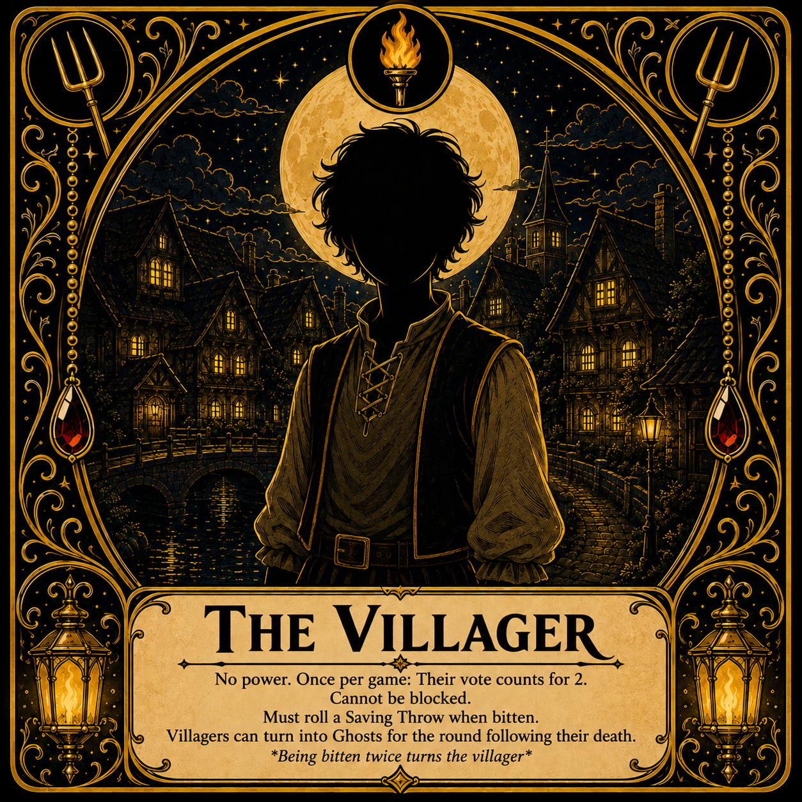
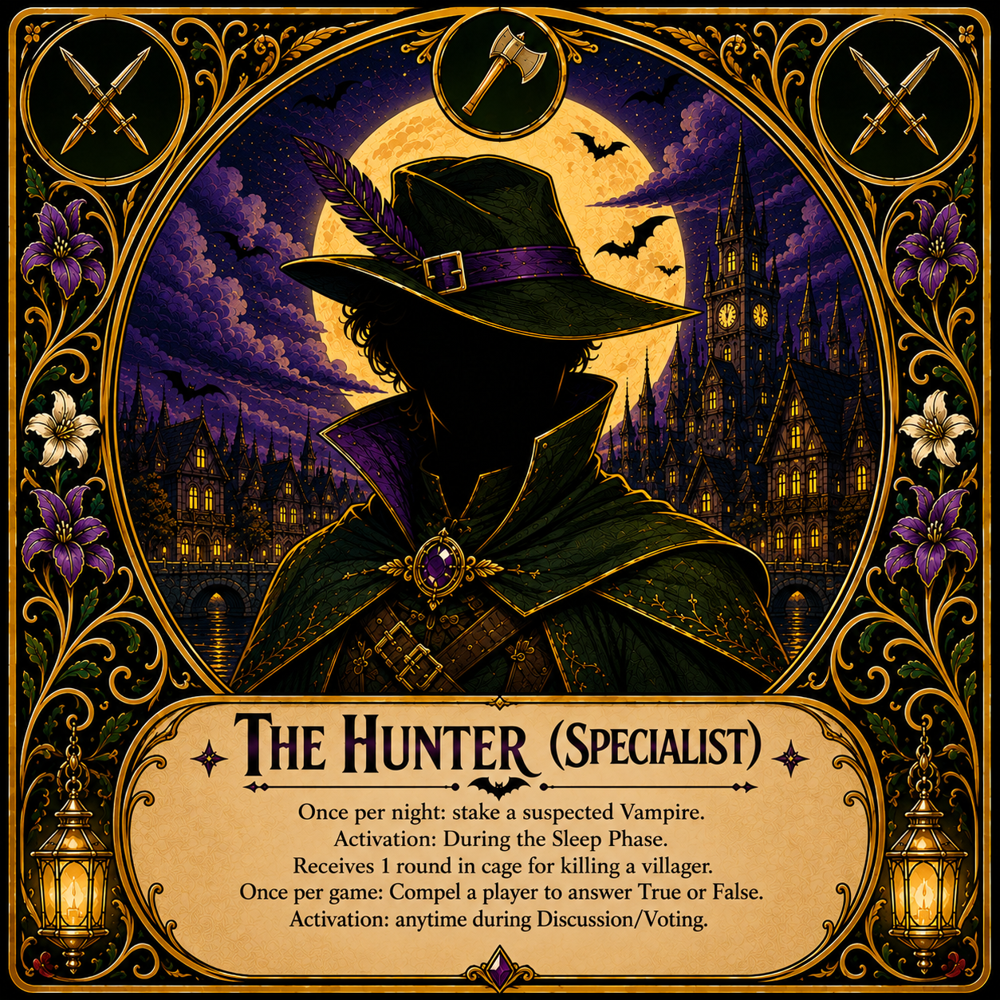
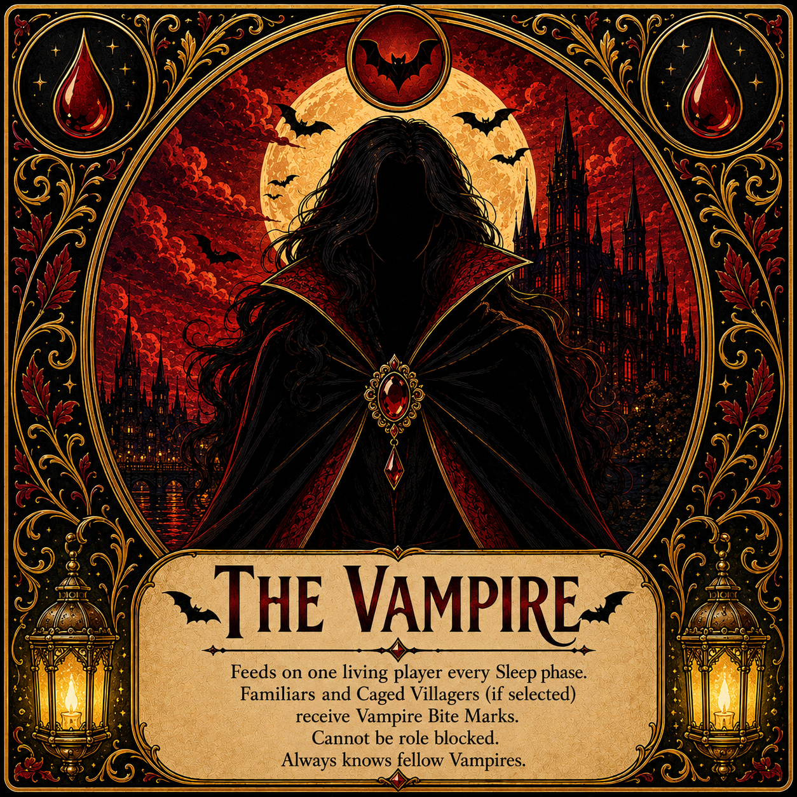
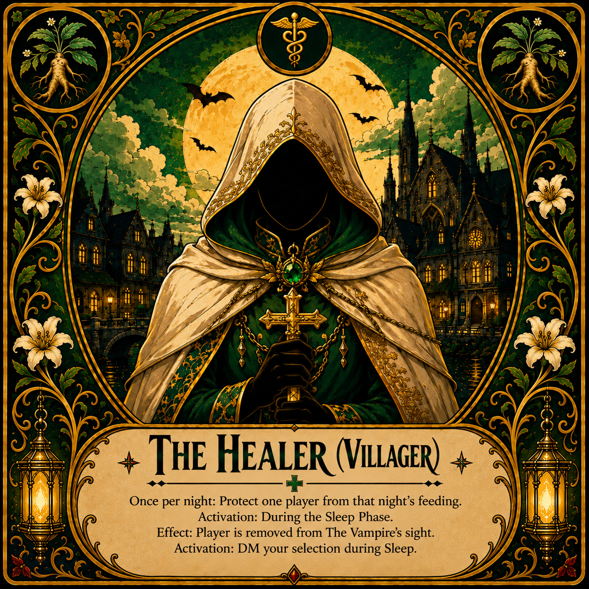
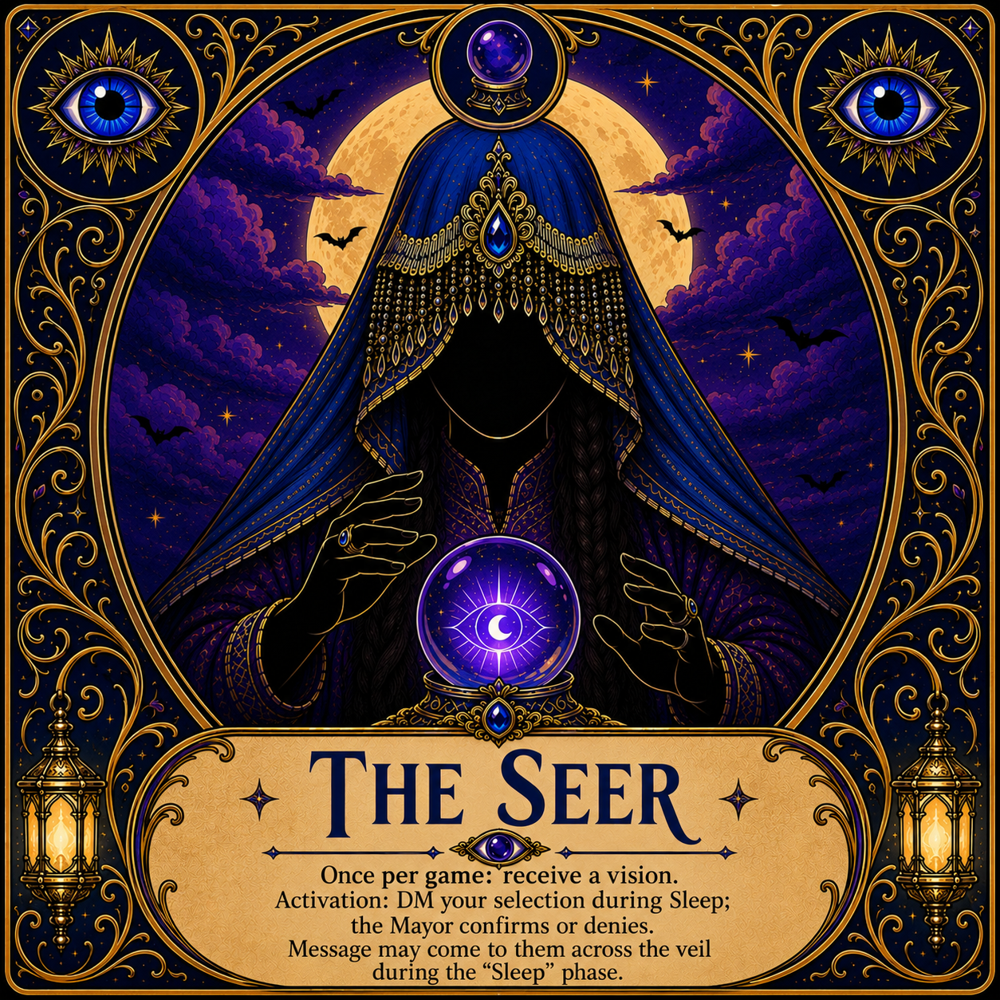
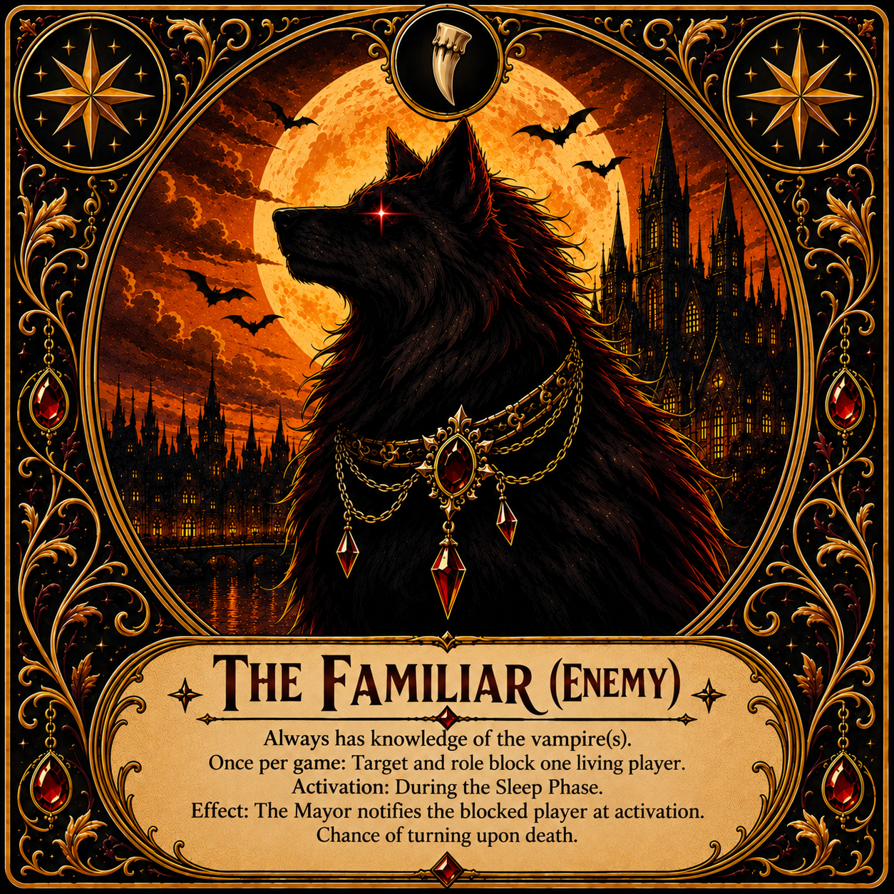

Queen Carmilla's Castle has parked at the edge of a small town. The priest is dead. The Mayor (DM) is the town's sole authority, judge, and jailer. The villagers must find the vampire before the town runs out of nights.
There is no day phase. The entire game takes place across 3 consecutive nights.
Components
The Gathering — DM tool that deals roles privately.
The Wheel of Fates — DM uses for Encounter results.
Vampire Countdown Clock — paces Town Hall discussion.
Role cards (Villager, Seer, Hunter, Healer, Vampire, Familiar)
Dice Rolls
Mics only allowed during Discussion and Voting phase. (Optional)
Kindroids assist you in keeping clues together and advising.
Roles






Setup
The Gathering:
Villager is the default/remainder role; add Seer, Hunter, Healer, Vampire, Familiar as you like. One Vampire minimum.
30% of players will be villagers. The rest can be comprised of any combination.
Roles are dealt privately via DM. Vampire selects Night 1's victim.
Players roll 1d6 for turn order.
Town Hall: Night 1 opens cold: the Mayor announces the priest's body has been found.
Each player introduces themselves, their kin and their role (Truth Optional)
Phase Order
Reveal > Dice Roll Event (turn-based) > Discussion > Vote (1 player elected to be caged until morning) > Sleep > End of Day
Rolling the Dice
Roll 1d6. The Mayor delivers the encounter outcome.
Winning
The village wins the moment the Vampire is caged and burns, or a Hunter's stake lands true.
The Vampire wins if they're still free when only two players remain.